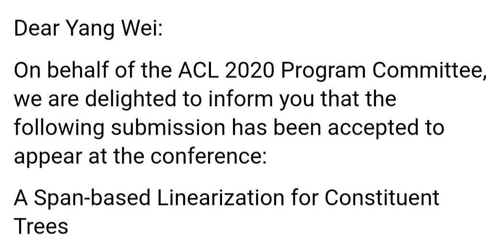
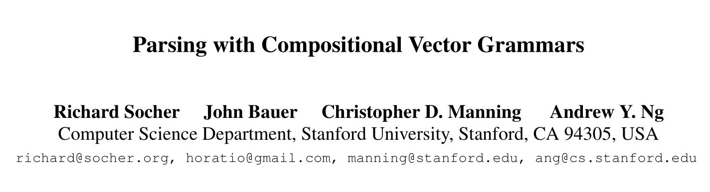
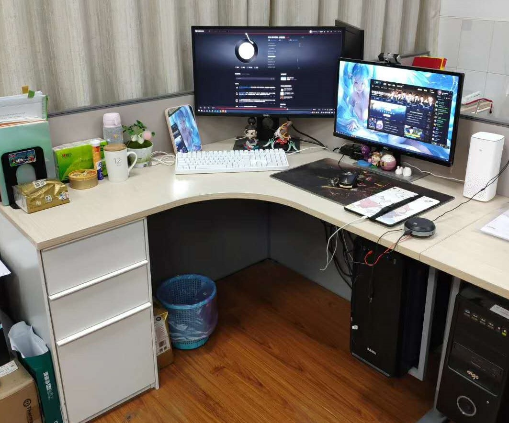
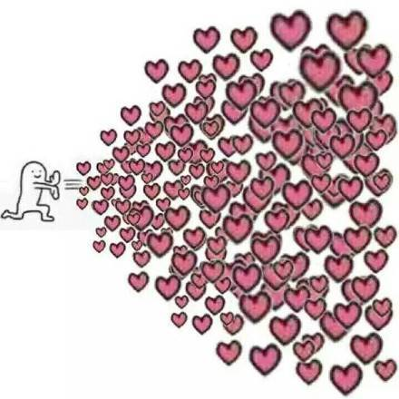
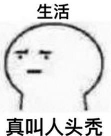

就在今天中午，在我失眠了两个晚上之后，ACL 2020 终于发送了录取通知邮件。庆幸的是，我这篇水文竟然也中了。

其实这篇能中我是根本没想到的，在经历了一年多的摸鱼失败之后，在去年最后一个季度我才拍脑袋想了这个诡异的 idea 。然后搞了一两个月交了论文，苦苦等到二月份，没想到 review 评分还可以（4、3.5、2.5）。不过说实话，我感觉 4 分的那个没有 2.5 分的那个看的透彻。最后和老板一顿 rebuttal ，就只能求佛指望 2.5 分的那个提一提分了。最后感谢 2.5 分的评审仔细阅读了我的回复，提了 1 分，但是诡异的是 4 分的评审给我降到了 3.5 分，估计是之前也没仔细看懂细节吧。不过结局是好的，这三位应该都是这个领域很权威的大佬，不然不会看的这么透彻的。最后三个评审和 meta-review 都给出了一些批评性的意见，这也让我又想起了导师在上次碰壁后说过的一句话：他们能认真看并且提出批评意见，说明这个方向还没死掉，还是有人关注的。
我的科（mo）研（yu）生涯还得从保完研开始说起。很多人都问过我为啥不保研去清北复交呢？每次我的回答都差不多吧。一是当时确实懒，嫌夏令营啥的好麻烦，保本校舒舒服服啥都不用干。二是当时不知道看了哪里说研究生导师大于学校，而且确实现在的导师超级 nice ，于是我就留下了。三是心想着早半年进实验室不香吗？能多做些科研。事实证明，早进没啥用，都被我打游戏摸鱼耗光了。
遥想两年前的寒假，那时候刚刚保研不久。进了实验室第一件事就是做毕业设计了，那时候就给我定下了现在的方向——成分句法分析。不过那时候真是啥都不懂，深度学习也刚入门，句法分析看的几篇论文（还是导师丢给我的）竟然都是传统方法的经典论文。于是毕业论文做的就是传统方法夹杂着深度学习，现在看来就是一坨 shi ，效果差到离谱，数据都没处理好，吹的倒是天花乱坠，还混了个优秀毕业论文。早知如此，当初就应该直接看最新的前沿论文，这样不仅毕业论文好写，也能更早的为现在打下坚实的基础。不过像下面这种经典论文还是必看的，虽然方法现在过时了，但是思想有些还是可以借鉴的。

然后就开始第一次顶会投稿了，上来就给我整了个 ACL 2019 。那时候我还没什么想法，论文倒是看了差不多了，然后拍脑袋想了个改编的点子。其实本质上方法没啥大差别，但是当时啥也不懂啊，觉得挺有新意，就愣愣地拿别人的代码改改跑起来了。最后效果也是难以言尽，就高了一丢丢，估计还是实现上的影响或者多次跑取了个最好的。然后憨憨地写了篇论文，导师还给我认真从头到尾修改了好几遍，最后提交了。第一次出结果也慌的很啊，半夜醒来一直看手机邮箱。然后凌晨两点收到的邮件，睡意朦胧中看了眼第一句写着 we are sorry （当时没有 rebuttal）。评分也不高，只有 3.5、2.5、2.5 ，现在看来 3.5 的那个评审还是给足面子了，要我说 2.5 都高了。当时导师就说下了那句让我印象深刻的话：不要怕，应该感到高兴，他们能认真看并且提出批评意见，说明这个方向还没死掉，还是有人关注的。
这时候应该才二三月份吧，你要问我这还有大半年呢，你干嘛了？是的，我干嘛了呢？我什么都没干，我直接把这篇一个字没改转投了 CoNLL ，心想一个 CCF C 类会议，总能碰碰运气吧？结果还是低分被拒，事实证明这篇果然是坨 shi ，这时候我自己都已经不想看了，索性丢在了一边再也不管它了。而导师这时候安慰我说，CoNLL 别看是个 C 会，不水的，不要气馁。一直到下半年开学，我基本上没有任何新的 idea ，一直都在召唤师峡谷放纵，然后顺带看完了这个方向几乎所有的论文，但是依旧没有任何 idea 。
直到有一天，我看着师兄的 ACL 2019 论文，用 GNN 来做依存句法分析。我就想好像还没人用 GNN 来做过成分句法分析，可是哪来的图呢？依存树可以转变成一张图，结点数量是确定的，在完全图上跑 GAT 可以生成出依存树。但是成分树还有中间结点啊，似乎不好办，于是那段时间我一直在想有没有其他的表示方法，可以把成分树也表示成 GAT 可以处理的形式。
那段时间真的特别迷茫，不知道这条路走不走得下去。每天跟导师聊天都会抱怨，有监督确实做不下去了，这次投完我一定要转无监督了。然后终于有了这篇论文 idea 的雏形，把句法树转成了线性序列，也有办法跑 GAT 了。但是在代码实现上，我这次学乖了，之前一整年我都是在一份效果不是那么好的代码基础上修改的，用的是 DyNet 深度学习框架。但是这次我决定直接在 SOTA 代码，也就是 ACL 2019 交大同学那篇论文代码基础上进行修改。老话说的对的，确实要站在巨人的肩膀上，会少走很多弯路，自己实现确实锻炼代码能力，但是实在是太耗时间了，当时来不及了。

那一个多月，我再也没有出现在召唤师峡谷过（可能出现过一两次嘻嘻），每天晚上都熬到了凌晨一两点才走。调参确实辛苦，尝试了各种参数想把效果再调高一点，但是确实已经差不多到顶了，很难上去了。后来讨论中经师兄提醒又加了 dropout ，效果一下子又上去了很多，那时候才看到了一丝希望。做完了各种实验之后，就顺带着开始写论文了。论文写起来其实挺快的，一个星期就能差不多有了初稿。
不得不说，导师对我的帮助实在是太大了。跑实验那段时间，每天下午都要和我讨论半天模型细节。刚开始他也不是很懂我的 idea，讲了很久他才明白个大概。等论文写完，他改我的初稿，把我一整页的啰嗦证明浓缩成了很精简的几段话。又把我的 introduction 完全重写了一遍，基本上实验之前的部分全都是他撰写和修改的。后来苦等了两个多月，rebuttal 出来了，因为疫情在家只能远程和导师交流。老板又把我的回复完全重写了一遍，真的看起来读起来完全不同了，rebuttal 确实得找有经验的好好写！

现在总算松了一口气，一直没有论文，其实我挺为毕业感到担忧的。如果这次不中，我都打算直接水个 C 会混毕业了。实习啥的都不用想太好的了，老老实实找个升经验吧。但是现在中了，还是不能松懈，我还是决定继续想 idea 投之后的几个会。英雄联盟中无极剑圣有句台词：真正的大师，永远怀着一颗学徒的心。不能因为达到毕业要求了就开始混日子了。其实这次说白了还是运气好水上的论文，我感觉我还是很菜。看看网上实习都问 LSTM、SVM 之类的细节原理，我就一脸懵逼，平时我都调包啊，细节我哪里记得？其他很多基础知识也都朦朦胧胧早已不记得了。工程代码能力更别谈了，模型都没手撸过，都是修修改改，以后不知道怎么办呢。别人总吹我，你很强啊、牛啊，其实我自己知道的，我算周围人里面比较菜的了，所谓的强都是表面上的和本科那些没啥用的成绩了，科研和课程差别还是太大了。特别是网上认识了很多很多的大佬之后，越发感觉我根本不值得一提。
总结我的硕士前半程，一年划水，idea 做废掉了，半年奇思妙想水了一篇顶会。我的经历并不值得学习，但是我还是想提几点也许可以对科研有帮助的小建议：
- 积累是一定要的，你做的这个方向一定要了解的差不多，才能知道下一步朝哪发展。
- 不要拘泥于只看你方向论文，去看看其他方向论文，甚至看看 CV 的论文，说不定有能直接拿过来用的 idea 。
- idea 挺随缘的，也许是你在吃饭的时候突然蹦出来的。平时走路、吃饭等闲暇时间可以脑子里想一想，我的 idea 就是冲澡的时候想出来的。
- 多跟导师、学长们讨论讨论，可以让你少走弯路，甚至把你从错误的方向拉回来。讨论的时候也许能解决你想了很久都没想通的问题。
- 站在巨人的肩膀上。论文多看顶会的，代码多看大牛写的。
- 平时组会别人讲论文的时候多听听，虽然跟你方向不搭，可能也能拿来用的，对你的 idea 也有很大启发。
- 有时间和精力的，可以写博客，写一点论文解读，写的过程可以解决你没看懂的很多问题。
下面要开始找实习和准备下一阶段工作了，希望中意的几家公司能要我吧哈哈。这里也感谢所有一直以来支持我的朋友们，祝你们早日顶会发到手软。还有我的几个儿子们，不知道什么时候才能开学呢，几个月没见了，请你们的饭局要约起来了。最后微信名终于改掉了（不中 paper 不改名，拜拜~），下面该考虑脱单的事宜了，操劳的爸妈都把乡下老房子装修好了，就等着我领一个回家了，不知道发量日渐稀少可还有人要哦。
